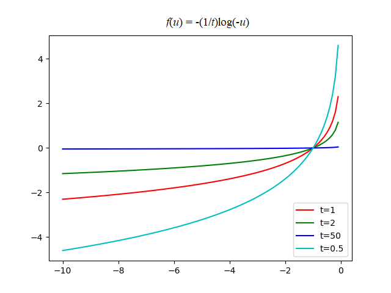

3. 优化问题求解(2)#
求解约束优化问题的标准方法是将约束优化问题转化为无约束优化问题：主要有3种：Lagrangian乘子法、罚函数法和增广Lagrangian乘子法。
3.1. Lagrangian乘子法#
考虑等式约束的凸优化问题，
Lagrangian乘子法将上式转换为无约束问题，即Lagrangian目标函数为，
则原始优化问题的对偶目标函数为，
其中，\(f^*(\pmb{y})=\sup\limits_{\pmb{x}}(\pmb{y}^\top\pmb{x}-f(\pmb{x}))\)是\(f(\pmb{x})\)的凸共轭函数，\(\pmb{\lambda}\)为对偶变量。根据Lagrangian乘子法，原始等式约束极小化问题变为对偶极大化问题，即
假设强对偶性满足，则原始问题与对偶问题的最做优解相同。此时，原始极小化问题的最优解点\(\pmb{x}^*\)可由下式计算，
在对偶上升法中，由两个步骤组成，
3.2. 增广Lagrangian乘子法#
将罚函数与Lagrangian函数相结合，构造出更合适目标函数的方法称为增广Lagrangian乘子法。下面从等式约束和混合约束两个方面讨论该方法。
3.2.1. 等式约束#
考虑等式约束优化问题。记\(\pmb{h}(\pmb{x})=[h_1(\pmb{x}),...,h_q(\pmb{x})]^\top\)。对Lagrangian目标函数\(L(\pmb{x},\pmb{\lambda})\)加惩罚函数，即，
其中\(\rho\)为惩罚参数。这种将罚函数与Lagrangian函数相结合，构造出更合适的目标函数的方法称为增广Lagrangian乘子法。
求解无约束优化问题\(\min L_\rho (\pmb{x},\pmb{\lambda})\)的对偶上升法由以下两个更新组成，
可以看出，
1. 若\(\rho=0\)，则退化为标准的Lagrangian乘子法。
2. 若\(\pmb{\lambda}=0\)，退化为标准罚函数法。
例：若取\(\pmb{h}(\pmb{x})=\pmb{Ax}-\pmb{b}\)， \(\phi(\pmb{h}(\pmb{x}))=\frac12\lVert \pmb{Ax}-\pmb{b}\rVert_2^2\)，则增广函数为，
对应的对偶上升法更新为，
3.2.2. 混合约束#
考虑不等式和等式约束同时存在的混合约束问题，
令非负向量\(\pmb{s}\succeq 0\)为松驰变量，使得\(\pmb{Bx}+\pmb{s}=\pmb{h}\)；以及罚函数\(\phi(\pmb{g}(\pmb{x}))=\frac12 \lVert \pmb{g}(\pmb{x})\rVert_2^2\)，则增广目标函数为，
对应的对偶上升法更新为，
3.3. 内点法#
用内点法求解含有不等式约束的凸优化问题，就是用Newton方法求解一系列等式约束问题，或者求解一系列KKT条件的修改形式。
3.3.1. 障碍法#
尝试将不等式约束问题转化为等式约束问题，从而使用Newton方法求解。即，原问题
可以转化为，
其中\(I_{-}(u)\)是指示性函数，
这样，我们就可以转化为等式约束的优化问题，但\(I_{-}(u)\)不可微，因此不能使用需要梯度的下降方法。
对数障碍
指示函数不可微，可以使用一个近似的可微函数来代替：

观察函数图像，可以发现对数障碍函数是非减函数，且当\(u>0\)时函数取值为\(\infty\)。因此，定义对数障碍函数为,
对数障碍函数的梯度和Hessian矩阵为，
用\(\hat{I}_{-}\)替换\(I_{-}\)可得到以下近似，
由于\(-(1/t)\log(-u)\)是\(u\)的单增凸函数，上式上的目标函数是可微凸函数。假定恰当的闭性条件成立，则可以用Newton方法来求解。上式等价于以下问题，
Central Path
针对不同的\(t>0\)值，我们定义\(\pmb{x}^*(t)\)为相应优化问题的解，那么，Central path就是指所有点\(\pmb{x}^*(t),t>0\)的集合，其中的点被称为central points。所有中心路径上的点由以下充要条件所界定：\(\pmb{x}^*(t)\)是严格可行的，即满足，
并且存在\(\hat{\nu}\in\mathbb{R}^p\)使得（中心路径条件）
成立。
中心路径条件的KKT条件解释。点\(x\)等于\(\pmb{x}^*(t)\)的充要条件是存在\(\lambda,\nu\)满足
KKT条件和中心条件的唯一不同在于\(\lambda_if_i(\pmb{x})=0\)被条件\(-\lambda_if_i(\pmb{x})=1/t\)所替换。从上式可以导出中心路径的一个重要性质：每次个中心点产生对偶可行解，因而给出最优值\(\pmb{p}^*\)的一个下界。
解释：先定义
，那么\(\lambda^*(t)\)和\(\nu^*(t)\)是对偶可行解。原式可以表示成，
可以看出，\(\pmb{x}^*(t)\)使\(\lambda=\lambda^*(t),\nu=\nu^*(t)\)时的Lagrange函数，
达到最小，这意味着和\(\nu^*(t)\)是对偶可行解。因此，对偶函数是有限的，并且，
这表明\(\pmb{x}^*(t)\)和对偶可行解\(\lambda^*(t),\nu^*(t)\)之间的对偶间隙就是\(m/t\)。作为一个重要的结果，我们有，
即\(\pmb{x}^*(t)\)是和最优值偏差在\(m/t\)之内的次优解。也证实了\(\pmb{x}^*(t)\)随着\(t\rightarrow \infty\)而收敛于最优解。
障碍函数方法
算法：障碍法 |
|---|
|
Newton步径\(\Delta \pmb{x}_{nt}\)以及相关的对偶变量由以下线性方程确定，
3.3.2. 原对偶内点法#
原对偶内点法和障碍方法非常相似，但也有一些差别。
仅有一层迭代，没有障碍方法的内部迭代和外部迭代的区分。每次迭代时同时更新原对偶变量。
通过将Newton方法应用于修改的KKT方程（即对障碍中心点问题的最优性条件）确定原对偶内点法的搜索方向。原对偶搜索方向和障碍方法导出的搜索方向相似，但不完全相同。
在原对偶内点法中，原对偶迭代值不需要是可行的。
原对偶方法经常比障碍方法有效，特别是高精度场合，因为它们可以展现超线性收敛性质。原对偶内点法相对于障碍方法所具有的另一个优点是，它们可以有效处理可行但不严格可行的问题。
3.3.2.1. 原对偶搜索方向#
如同障碍方法，我们从修改KKT条件开始，该条件可以表述为\(r_t(\pmb{x},\lambda,\nu)=0, t>0\)，其中
此处的\(\pmb{f}:\mathbb{R}^n\rightarrow\mathbb{R}^m\)和它的导数矩阵\(D\pmb{f}\)由下式给出，
如果\(\pmb{x,\lambda,\nu}\)满足\(r_t(\pmb{x,\lambda,\nu})=0\)（且\(f_i(\pmb{x})<0)\)，则\(\pmb{x}=\pmb{x}^*(t),\lambda=\lambda^*(t),\nu=\nu^*(t)\)。特别地\(\pmb{x}\)是原可行的，\(\lambda,\nu\)是对偶可行的，对偶间隙为\(m/t\)。
我们将\(r_t\)的成分命名为如下：
对偶残差
原残差
中心残差(修改的互补性条件)
先固定\(t\)，考虑从满足\(\pmb{f}(\pmb{x})\prec 0,\lambda \succ0\)的点\((\pmb{x},\lambda,\nu)\)开始求解非线性方程\(r_t(\pmb{x},\lambda,\nu)=0\)的Newton步径。将当前点和Newton步径分别记为，
\[ \pmb{y}=(\pmb{x},\lambda,\nu),\quad \Delta \pmb{y}=(\Delta \pmb{x},\Delta\lambda,\Delta \nu) \]决定Newton步径的线性方程为，
\[ r_t(\pmb{y}+\Delta \pmb{y})\approx r_t(\pmb{y})+Dr_t(\pmb{y})\Delta \pmb{y}=0 \]即，\(\Delta \pmb{y}=-Dr_t(\pmb{y})^{-1}r_t(\pmb{y})\)。于是我们有，
\[\begin{split} \begin{bmatrix} \nabla^2 f_0(\pmb{x})+\sum_{i=1}^m\lambda_i\nabla^2f_i(\pmb{x})&D\pmb{f}(\pmb{x})^\top&\pmb{A}^\top\\ -\pmb{diag}(\lambda)D\pmb{f}(\pmb{x})&-\pmb{diag}(\pmb{f}(\pmb{x}))&0\\ \pmb{A}&0&0 \end{bmatrix} \begin{bmatrix} \Delta \pmb{x}\\ \Delta\lambda\\ \Delta\nu \end{bmatrix} =-\begin{bmatrix} r_{dual}\\r_{cent}\\r_{pri} \end{bmatrix} \end{split}\]所谓原对偶搜索方向\(\Delta y_{pd}=(\Delta x_{pd},\Delta\lambda_{pd},\Delta\nu_{pd})\)就是上式的解。
3.3.2.2. 代理对偶间隙#
在原-对偶内点法中，迭代点\(\pmb{x}_k,\lambda_k,\nu_k\)不一定是可行解(not necessarity feasitble),除了在算法收敛的极限情况。这意味着我们不能方便的在每个步骤\(k\)计算对偶间隙\(\eta_k\)。因此，可以定义一个代理对偶间隙(surrogate duality gap)如下，
该代理间隙有可能成为对偶间隙，当\(\pmb{x}\)是原问题可行且\(\lambda,\nu\)是对偶可行时（即，\(r_{\mathrm{pri}}=0 \wedge r_{\mathrm{dual}}=0\)）。注意：参数\(t\)对应的代理间隙为\(\hat{\eta}=m/\hat{\eta}\).
原-对偶方法
算法：原-对偶方法
1. 给定满足\(f_1(\pmb{x})<0,\cdots f_m(\pmb{x})<0，\lambda\succ 0, \mu>1\)，误差阈值\(\epsilon_{\mathrm{feas}}>0, \epsilon>0。\)
2. 重复进行
2.1 设置\(t\)。\(t:= \mu m/\hat{\eta}.\)
2.2 计算原-对偶方法\(\Delta\pmb{y}_{pd}\)
2.3 线性搜索并更新。求得步长\(s>0\)，并设置\(\pmb{y}=\pmb{y}+s\Delta\pmb{y}_{\mathrm{pd}}\)
3 until (\(\lVert r_{\mathrm{pri}}\rVert_2\le \epsilon_{\mathrm{feas}}, \lVert r_{\mathrm{dual}}\rVert_2\le \epsilon_{\mathrm{feas}}\) and \(\hat{\eta}\le\epsilon\)).